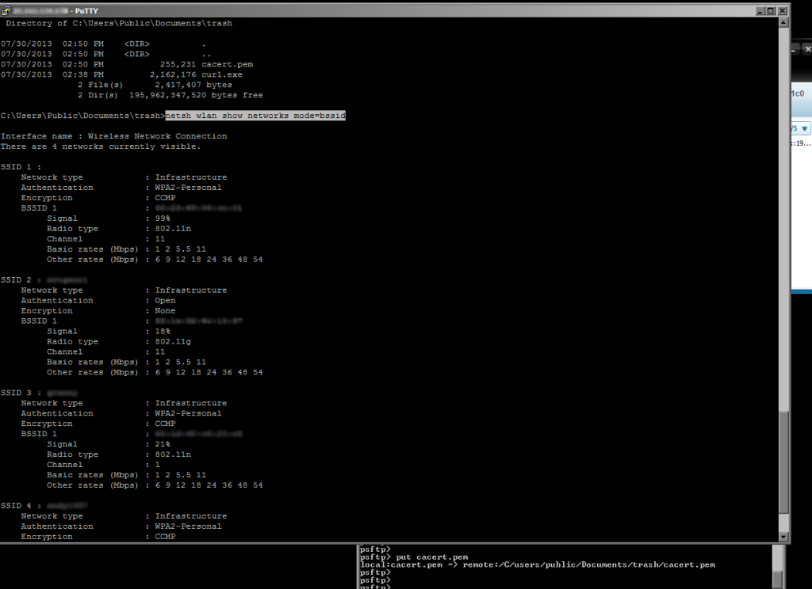
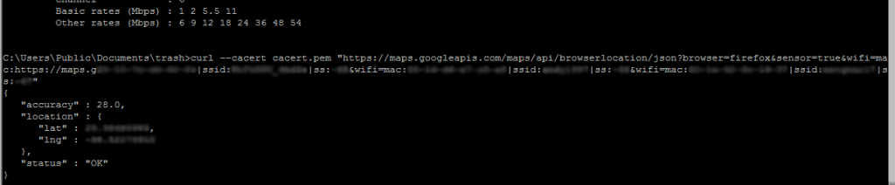

|| Geolocation Methods, author: xor-function || 10/08/2015 || Back to main
This guide picks up were we left on in "Asset tracking with TOR" and goes in detail on methods you can use to geolocate your stolen laptop with free software so don't worry about having to spend anything other than some of your time. This is not going to cover every possible thing just the following two methods. Geolocation through: BSSID information, Image metadata Software used: Curl for Windows (make sure it has SSL support) http://curl.haxx.se/download.html Exiftool for Windows is avaliable here http://www.sno.phy.queensu.ca/~phil/exiftool/ Note, for this to work the computer must have a functioning wireless adapter that is ON. Get started by downloading curl to a comfortable location on your PC. Then from the command line use the netsh command variables [netsh wlan show networks mode=bssid] then use that information to input in a Google maps url that is what your browser sends when you are using google maps. "https://maps.googleapis.com/maps/api/browserlocation/json?bowser=firefox& senswifi=mac:[MAC:00-00-00-00-00-00]|ssid:[ssid]|ss:[signal-stregnth]or=true& wifi=mac:https://maps.g[MAC:00-00-00-00-00-00]|ssid:[ssid]|ss:[signal strength]& wifi=[MAC:00-00-00-00-00-00]|ssid:[ssid]|ss:[signal-stregnth]" Without Brackets, leave quotes  Alternatively you can just paste this url directly into your web browser and get a response to display in text. This should work but it is unknown if Google verifies the computers gateway (router) to see if it matches one of the BSSID's in the url to act as a privacy mechanism. To verify this I would need existing data from a location then test it out remotely. Accomplishing this through the command line on the remote computer with curl should simulate an individual using a web browser (dont forget to change the user agent). This way should work regardless of any privacy mechanism in place if there is at all. To change the user agent in curl use the -A flag example: curl -A "User-Agent: Mozilla/5.0 (Windows; U; Windows NT 5.1; en-US; rv:1.9.2.12) Gecko/20101026 Firefox/3.6.12" So upload curl and the cacert.pem file through an SFTP session. The cacert.pem file is important as it verifies all the major certificate authorities, without this curl will not function correctly with HTTPS web sites. The file is available at http://curl.haxx.se/ca/cacert.pem curl --cacert cacert.pem "https://maps.googleapis.com/maps/api/browserlocation/json?bowser=firefox& senswifi=mac:[MAC:00-00-00-00-00-00]|ssid:[ssid]|ss:[signal-stregnth]or=true&wifi=mac:https://maps.g[mac-address]| ssid:[ssid]|ss:[signal strength]&wifi=mac:[MAC:00-00-00-00-00-00]|ssid:[ssid]|ss:[signal-stregnth]" The --cacert option is necessary as the url is an HTTPS web server More than one BSSID is required and the more there is provided the more accurate the result will be. Input that into the command line and you should receive a response from Google with the gps position of the device within a measurement of accuracy.  Input those coordinate's into Google maps and your done. Image Metadata For this grab exiftool and have it at the ready. Usage example: exiftool myimage.jpg Were are going to use it to analyze the meta-data in JPEG images taken by smart-phones as they tag the GPS position to pictures automatically depending on manufacturer. So run a search function on the laptop from the command line to find some .jpeg files for example [dir /B /S C:\Users | find "jpg"]. When you find something promising grab it with SFTP and run it through exiftool for some dirt. You will then have to convert this data to the digital format google maps uses. Once this is accomplished input the data into the search bar in maps and bam. There you go.